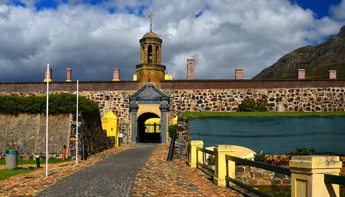

Day 1-Arrive Johannesburg
Welcome to South Africa, Meet & Greet by local representative. Johannesburg in South Africa is the second largest city in Africa, offers visitors an experience as unique and diverse as the city The city of Johannesburg is versatile in its offerings as destination and has almost everything you’re looking for! Overnight at the hotel in Johannesburg.
Meals: Dinner,lunch
Day 2-Johannesburg – Sun City
Today after breakfast proceed to Sun City. The complex is surrounded by two championship golf courses, numerous swimming pools and a huge manmade lake offering various water sports. Then you could relax at the Valley of the Waves, or take a walk through the gardens of the Lost City. This magical city knows no limits - you have the chance to win a fortune at the Casino and Entertainment Centre, there are lavish extravaganzas and a multitude of restaurants to cater for every taste.
Meals: Breakfast,lunch & Dinner
Day 3-Sun City – Johannesburg – Port Elizabeth - Kwantu
After breakfast transfer to Johannesburg airport to board a flight to Port Elizabeth. Arrive and transfer to Kwantu, home to Africa’s Big Five - Elephant, Rhino, Buffalo, Lion and Leopard. On Arrival check in to the lodge.
Meals: Breakfast,lunch & Dinner
Day 4 -Kwantu – Game Drive
It’s time to experience the wild side of South Africa. Today you will enjoy morning and afternoon game drive. Overnight at Hotel
Meals: Breakfast,lunch & Dinner
Day 5- Kwantu - Knysna
After breakfast transfer to Knysna. Arrive and enjoy a Cruise on the Vast Knysna Lagoon. Enjoy an amazing view of the imposing sandstone ‘Heads’ which guard the sea entrance to Knysna’s huge tidal lagoon, and the forests, marshes and pristine beaches surrounding it. Evening, you check into the hotel at Knysna.
Meals: Breakfast,lunch & Dinner